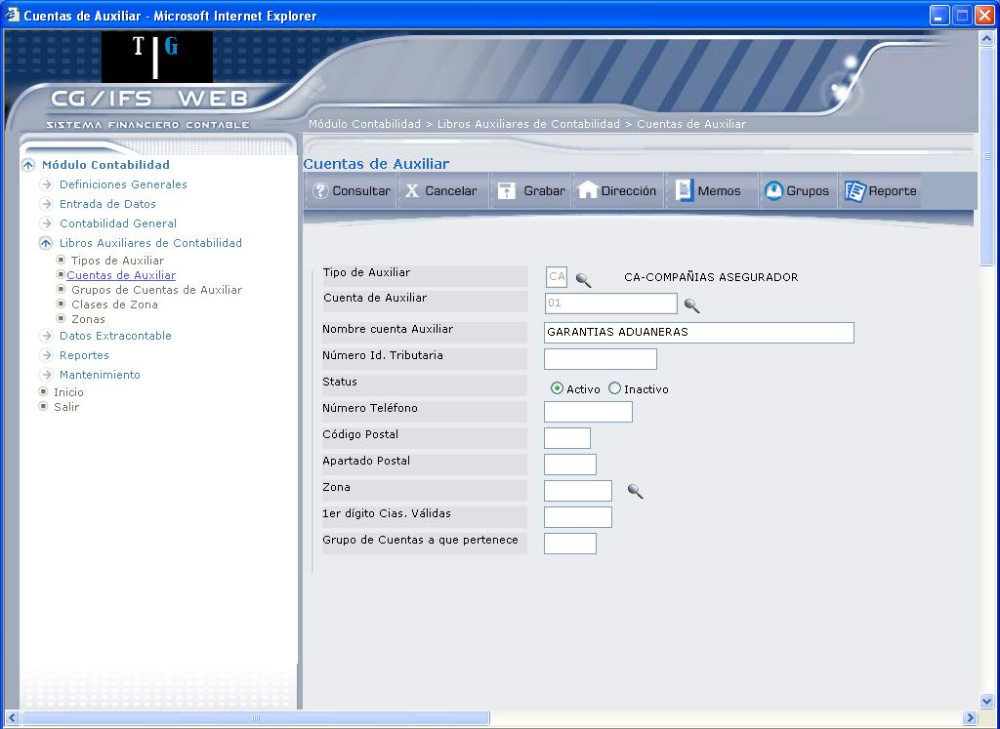
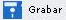
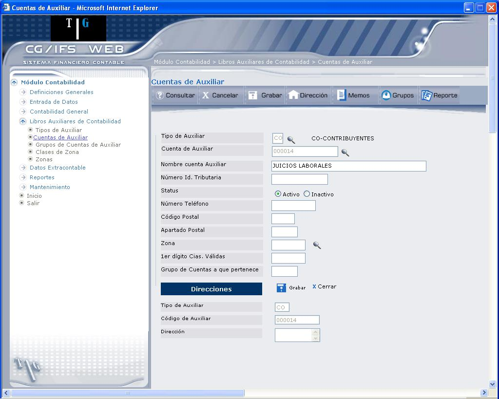

Crear Cuenta de Auxiliar
Los valores que debe ingresar o actualizar se detallan a continuación:
Tipo de Auxiliar:
Digite el código del Tipo de Auxiliar al que va a pertenecer que se va a dar de alta o seleccione de la lista de Tipos de Auxiliar que se despliega al dar clic en el ícono ().
Cuenta de Auxiliar:
Digite el nuevo código de la cuenta de auxiliar que se desea crear y presione la tecla ENTER, que muestra los campos que debe ingresar en la pantalla que presenta 1.7:
En el caso de que desee consultar o modificar una Cuenta de auxiliar ya existente, dé clic en el ícono (), inmediatamente se desplegarán los campos que muestra 1.7.

Figura 1. Actualización de Cuentas de Auxiliar.
Los parámetros que se establecen para las Cuentas de Auxiliar permiten definir o modificar las características de una Cuenta de Auxiliar seleccionada.
Los campos Tipos de Auxiliar (Código y Nombre), Cuenta de Auxiliar (Código y Nombre de ) y el Status, se despliegan automáticamente. En el campo Status aparecen las opciones ‘ACTIVO’, 'INACTIVO'
Número Id. Tributaria: (opcional)
Anotar el número de identificación tributaria precedido del código del país al que pertenece.
Status:
Seleccione el casillero Activo o Inactivo, según corresponda.
Número Teléfono: (opcional)
Ingrese el número de teléfono.
Código Postal:
Si de Auxiliar no requiere dirección o requiere dirección sin formato, anotar el código postal (opcional). Si de Auxiliar requiere dirección con formato, el campo CÓDIGO POSTAL permanece protegido.
Apartado Postal: (opcional)
Ingrese el Apartado Postal, si de Auxiliar lo requiere.
Zona:
Si el Tipo de Auxiliar correspondiente tiene asociada una o varias Clases de Zona, debe anotarse un código de Zona correspondiente a o Clases de Zona. En caso contrario, no debe anotarse nada.
Si de Zona tiene validación de Zona debe anotarse una Zona que ya se encuentre definida en el archivo correspondiente. En caso contrario, puede anotarse cualquier Zona siempre y cuando la suma de sus caracteres coincida con la de las Clases de Zona asociadas al Tipo de Auxiliar. En el caso de no conocer exactamente el código de Zona a asociar a de Auxiliar que se está definiendo o modificando puede visualizar una ventana con los distintos niveles de de Zona asociada al Tipo de Auxiliar (presionando el ícono ) .
1er. Dígito Cias. Válidas: (opcional)
Para que de Auxiliar quede reservada para una o varias Compañías en particular, anotar el primer carácter del código de la misma. Si no se anota nada, todas las Compañías que utilicen este Tipo de Auxiliar pueden usar esta cuenta.
Grupo de Cuentas a que pertenece: (opcional)
Para que de Auxiliar pertenezca a un Grupo de Cuentas determinado, digitar el código del Grupo escogido. Si no se quiere que de Auxiliar pertenezca a ningún Grupo, se debe dejar en blanco este campo.
BOTONES
- Requieren DIRECCION FORMATEADA: Las Cuentas de Auxiliar pertenecientes a un Tipo de Auxiliar con esta especificación requieren dirección. Además esta dirección se expresa con un formato previamente definido.
- Requieren DIRECCIÓN NO FORMATEADA: Las Cuentas de Auxiliar pertenecientes a un Tipo de Auxiliar con esta especificación requieren dirección. Esta dirección se expresa libremente en cinco líneas.
- No requieren dirección: Las Cuentas de Auxiliar pertenecientes a un Tipo de Auxiliar con esta especificación no necesitan obligatoriamente dirección. Si el usuario desea asignarla, lo puede hacer como en el caso anterior.
Al presionar el botón Dirección, se despliega en la parte inferior de la pantalla la sección DIRECCIONES, como puede observarse en 1.8, donde se despliega: Tipo de Auxiliar y Código de Auxiliar. La dirección se ingresará dependiendo de los tres posibles casos que se explicaron anteriormente.
El ícono  permite registrar en el sistema la dirección ingresada.
El ícono permite cerrar esta sección, en caso de no querer registrar ninguna información.

Figura 1. Actualización de Cuentas de Auxiliar – Direcciones.
Created with the Personal Edition of HelpNDoc: Create help files for the Qt Help Framework